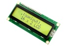

16 x 2 Character LCD Green Display (I2C) - DS16
Summary
Name: 16 x 2 Character LCD Green Display (I2C)
ID: DISP-16X2-G-LCD-I2
Hex ID: DS16
WebPage: https://github.com/oomlout/oomlout-OOMP/wiki/DISP-16X2-G-LCD-I2
Short URL: http://oom.lt/DS16
Revision History: https://github.com/oomlout/oomlout-OOMP/blob/master/parts/DISP-16X2-G-LCD-I2/
| Type |
Size |
Color |
Description |
Index |
DISP
Display |
16X2
16 x 2 Character |
G
Green |
LCD
LCD |
I2
(I2C) |
Images

About
This part is awaiting a description.
Specifications
| Info |
Value |
| Type |
Display |
| Size |
16 x 2 Character |
| Color |
Green |
| Description |
LCD |
| Index |
(I2C) |
Extra Details
Spotted a mistake, want to add more? Let us know oomp@oomlout.com
All images and resources are licensed [CC BY-SA] unless otherwise stated (ie. the datasheets)